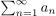
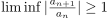
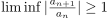
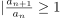
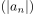
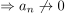
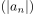
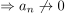

Quotientenkriterium für Divergenz in Abhängigkeit vom Limes Inferior
1. Satz
Sei  eine komplexe Reihe, s.d. für fast alle  gilt
Gilt , so divergiert
gilt
Gilt , so divergiert
2. Beweis
o.B.d.A. und  für alle  Daraus folgt:
 ist eine monoton wachsende Folge $ | an | ≤ | a1 | > 0$
 , und nach dem Nullfolgenkriterium konvergiert die Reihe nicht
Daraus folgt:
 ist eine monoton wachsende Folge $ | an | ≤ | a1 | > 0$
 , und nach dem Nullfolgenkriterium konvergiert die Reihe nicht